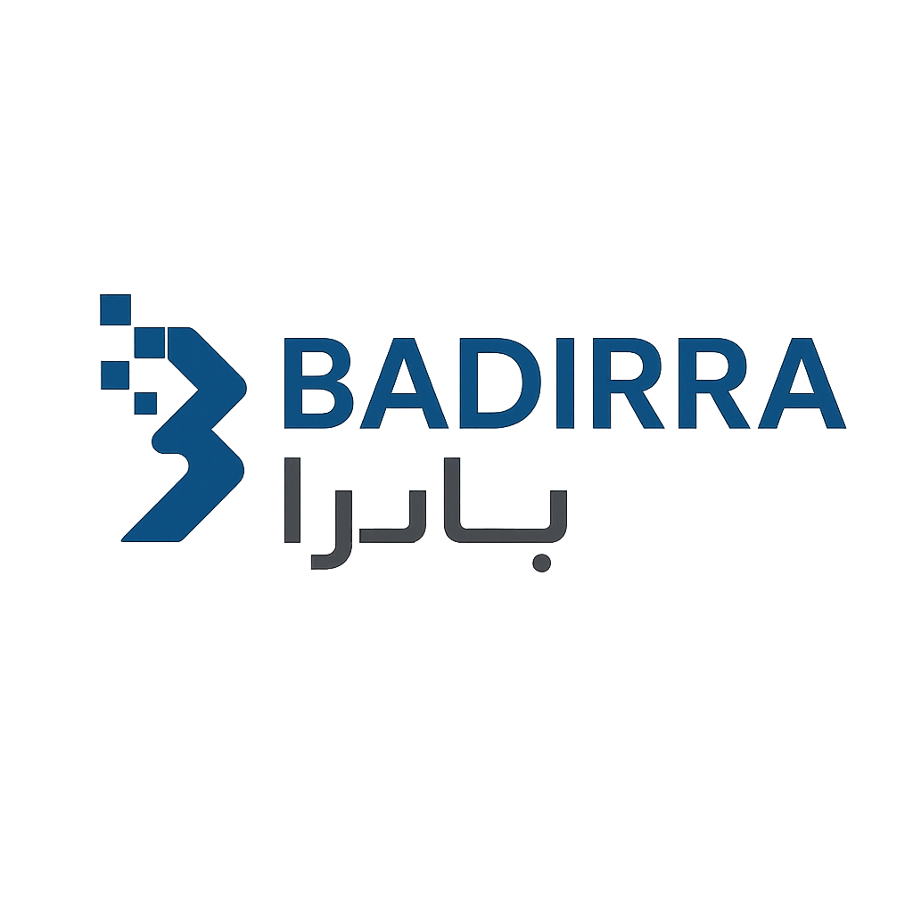
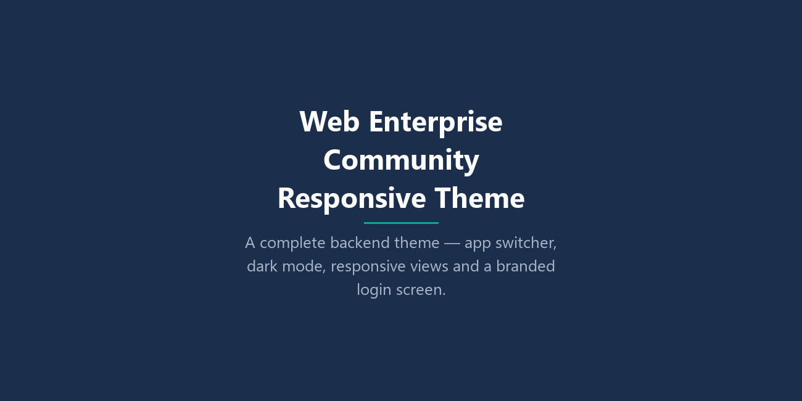
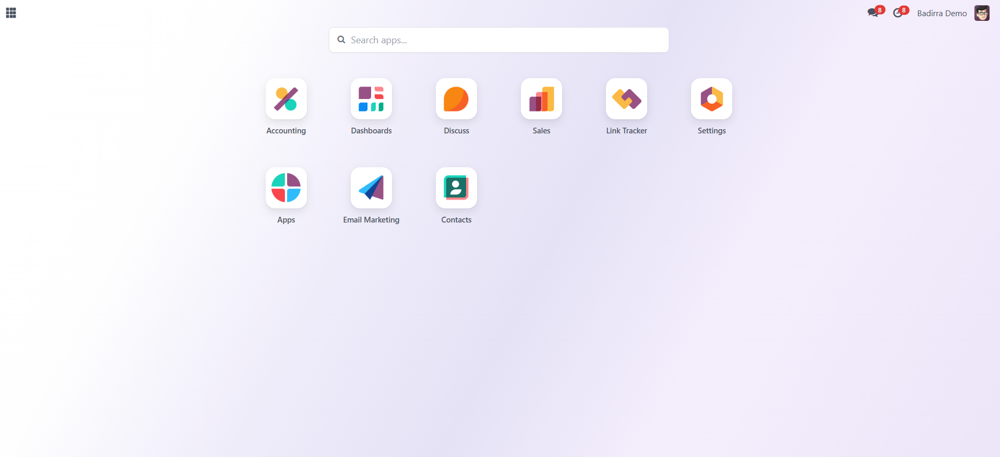
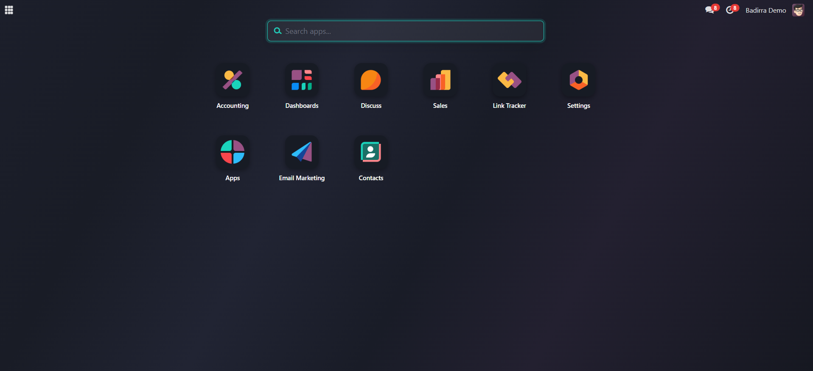
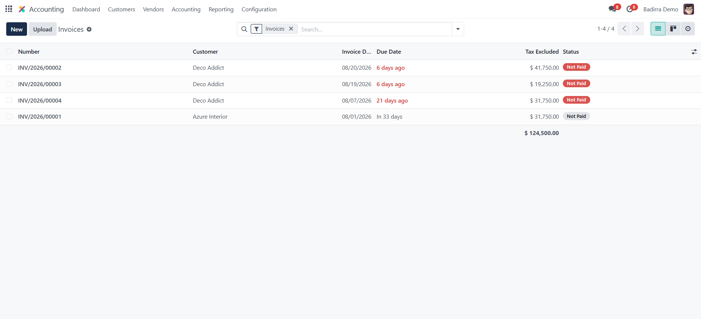
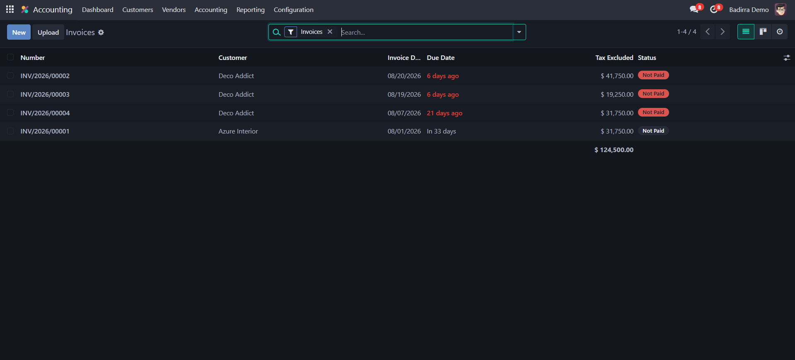
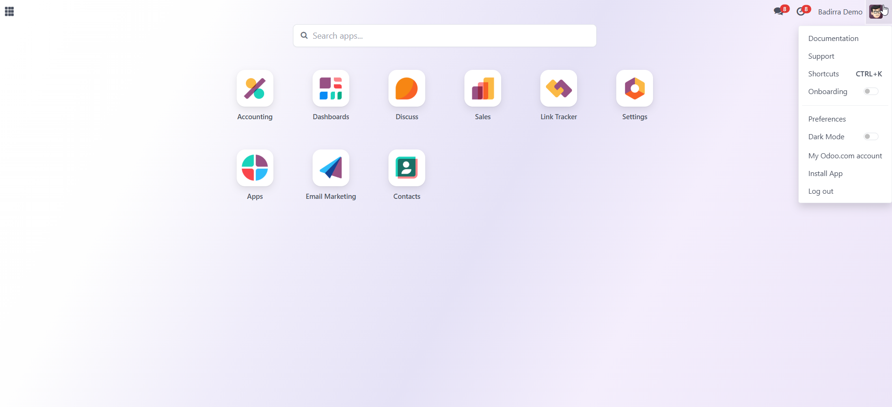
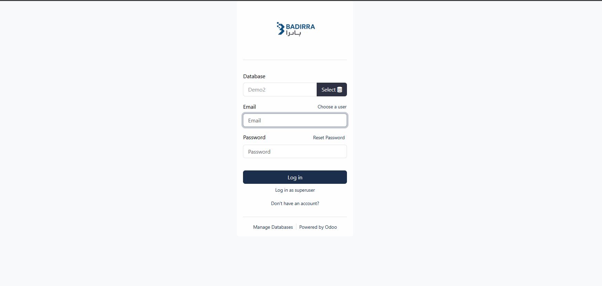

A complete backend theme for Odoo Community - a full-screen app switcher with drag-to-reorder, a navigation bar that gets out of your way, a genuinely complete dark mode that reaches every screen (not just the navbar), a compact list density, refined kanban and pivot views, and a branded login screen. Built from scratch against Odoo's own public web APIs, with no Enterprise dependency and no upsell dialog.
✔ Full-Screen App Switcher ✔ Drag-to-Reorder Apps ✔ Instant App Search
✔ Complete Dark Mode ✔ Compact List Density ✔ Mobile-Usable Pivot Table ✔ Branded Login Screen
✔ Full RTL & Arabic Translation ✔ 54 Languages ✔ Zero Extra Dependencies ✔ Free
|
 |
Supports: Community Enterprise Availability: ✔ On Premise ✔ Odoo.sh |
Web Enterprise Community Responsive Theme replaces the standard Odoo Community backend interface with the kind of experience Enterprise users take for granted: a full-screen app switcher instead of a cramped dropdown, a navigation bar that disappears when you don't need it, and a dark mode that actually holds up across every list, form, kanban, pivot and dialog you open. It is a pure interface layer - it adds no models, no menus and no data of its own, touches none of your business logic, and can be uninstalled at any time leaving your database exactly as it was.
A full-screen grid of your apps - six per row, searchable as you type, and reorderable by dragging so the apps you actually use sit where you expect them.
The dark palette is injected ahead of Odoo's own variables rather than appended after them, so it reaches core screens and third-party addons alike - including ones that ship no dark-mode assets of their own.
On the home screen the bar leaves the layout entirely instead of reserving an empty strip. Inside an app, hovering the switcher turns it into a back control - because that is what pressing it does from there.
A polished mobile burger menu, an app grid that steps down to four and then three columns, and a pivot table you can actually read and scroll on a phone.
Every string this theme adds is translated into all 54 languages Odoo itself ships translations for - Arabic, German, French, Spanish, Chinese, Japanese and more - with right-to-left layouts handled natively.
Depends on Odoo's web module and nothing more. No Enterprise code, no external Python packages, no background services - install it, restart, and it is live.
Below: the app switcher in light and dark mode, the navigation bar inside an app, list and kanban views, and the branded login screen.


The app switcher in light mode - six per row, searchable, drag to reorder.

The same screen in dark mode, down to the icon tiles and search field.

List views stay clean and readable, with an optional compact density.

The same list in dark mode - every column, badge and control follows.

One switch in the user menu - each user picks their own mode.

A branded sign-in screen that follows the light/dark preference.
Start typing to filter the app grid immediately - no dropdown to open, no page to load.
Arrange apps in the order that suits you. Newly installed apps join the end alphabetically rather than shuffling your layout.
Toggle tighter rows to fit more records on screen. The choice is remembered per browser and never touches your data.
Cards get real elevation, a clear hover state and calmer column headers, so a busy board stays readable.
Horizontal scrolling with a pinned row-header column and an edge fade, so a wide pivot no longer gets clipped off-screen.
A polished sign-in screen that follows the light/dark preference from the previous session.
Odoo's loading indicator restyled into a proper pill with a live spinner instead of a bare grey tag.
A switch in the user menu, applied per user - each person on the database picks their own.
Do I need Odoo Enterprise for this?
No - that is the point. It is built entirely against Odoo Community's own public web APIs and contains no Enterprise code. Its only dependency is the web module every Odoo installation already has.
Will it conflict with my other modules?
It is an interface layer only - no models, no menus, no data, and no changes to business logic. It restyles and extends existing Odoo screens, so other modules keep working as they did.
Does dark mode cover third-party modules too?
Largely, yes. The dark palette is injected before Odoo's own variables rather than appended after them, so everything compiled downstream - core screens and addons alike - picks it up, including addons that ship no dark-mode assets of their own.
Is dark mode set per user or for everyone?
Per user. Each person toggles it from their own user menu; nobody's choice affects anyone else.
Does the app order I set apply to everyone?
No - it is stored in your own browser, so each user arranges their apps independently. Nothing is written to the database.
Does it support Arabic and right-to-left layouts?
Yes, natively. Odoo's own RTL processing applies to the theme's stylesheets, and every string it adds is translated into all 54 languages Odoo ships translations for.
Can I uninstall it cleanly?
Yes. Because it adds no models or data, uninstalling returns the interface to standard Odoo and leaves your database untouched.
What Odoo version does it require?
Odoo 19.0 Community.